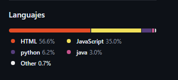

Perfil


Luggie Batista Dilone
republica dominicana, bonao, 42000
829 517 2816
luiggibatistadilone@gmail.com
Estudiante de 18 años con 4 años de experiencia en el desarrollo con JavaScript.
Apasionado por la programación y el desarrollo web. Conocimientos sólidos en Node.js, HTML, CSS, JavaScript y Python.
Habilidades en la creación de bots de Discord. Bilingüe en español e inglés.
Motivado por aprender y enfrentar nuevos desafíos.
Educacion
Actualmente cursando el último año de Bachillerato en el Politécnico Francisco Antonio Batista Garcia BonaoEspecialidad: Ciencias de la Computación
Experiencia
- Desarrollador de bots de Discord (hobbie)
- Creación y mantenimiento de varios bots de Discord utilizando Node.js y JavaScript
- Integración de APIs externas para añadir funcionalidades(metrica de tiempo y clima)
- Despliegue de los bots en servidores de Discord
- Trabajo de medio tiempo en CP sistemas (2 años no consecutivos)
- Creación y mantenimiento de varios bots de Discord utilizando Java y JDK
Experiencia
- Lenguajes de programación: JavaScript (3 años), Node.js(3 años), Python(6 meses), HTML, CSS
- Gestión de bases de datos: MySQL
- Control de versiones: Git
- Frameworks y APIs: Express.js, React, React Native, Discord.js
- Idiomas: Español (nativo), Inglés (fluido)
intereses
- Participación activa en comunidades de desarrollo web y programación
- Lectura de artículos y tutoriales sobre nuevas tecnologías
- Asistencia a eventos digitales y conferencias relacionadas con la programación